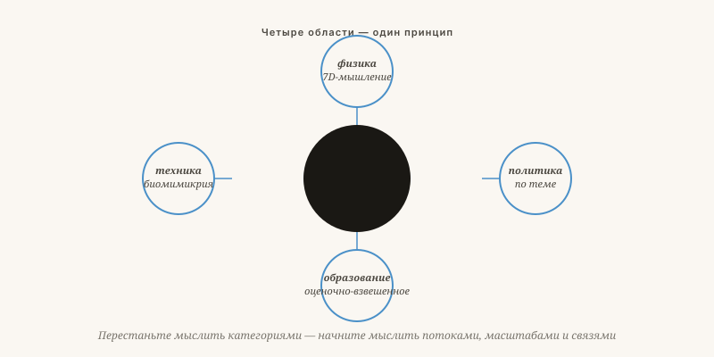

Как всё взаимосвязано
Одна нить через семь тем: перестаньте думать в ячейках, начните думать потоками, масштабами и связями.
Якобус ван Мерксштейн · 7 мин чтения · 23 мая 2026

Concordia disciplinarum — единство дисциплин
Та же ошибка в четырёх обличьях
Читая этот выпуск от начала до конца, Вы видите одну нить. Не важно, что за тема — партийная политика, образование, термоядерный синтез или судовые покрытия: ошибка всегда одна и та же, и решение тоже.
Ошибка: мышление в ячейках, масштабах и в горизонте нескольких лет.
Решение: мышление потоками, измерениями и в горизонте поколений.

Четыре области, одна структура
Стоп ячейкам, начало потокам
Осмелиться на большее число измерений
Масштаб, ценность и множественность как подлинные оси — не как второстепенный элемент. Тёмная материя как проблема масштаба, а не как вещество нового рода.
Решать по каждому вопросу
Измеримое соотношение цены и результата, независимый контроль, 24 сферы политики — каждая со своим циклом. Больше никакого пакетного голосования.
Вознаграждать результат
Финансирование по среднему баллу, а не по проценту успеваемости. Риск вернуть в детство. Свобода для школ быть непохожими.
Учиться у природы
Биомимикрия как серьёзная инженерная дисциплина. Вихревой реактор, плёнка из кожи акулы, избирательная теплозащита. Не против неё — вместе с ней.
Иная поверхность
Предотвращать обрастание прозрачностью и простотой, а не последующим налогообложением. Паразитизм соскальзывает с гладкой системы.
Революционное мышление
Революция здесь — не как ниспровержение, а как переворот: взгляд с той стороны, откуда ещё никто не смотрел. Галилей смотрел с точки зрения Солнца. Дарвин — с точки зрения изменчивости. Эйнштейн — с точки зрения света. Все они думали не интенсивнее своих современников — они смотрели с другой стороны.
«Газета без дискуссии — это проповедь. Здесь это невозможно.»
В следующих выпусках я подробнее разберу каждую тему. Но выбор, какая тема вернётся первой, — за Вами. Отвечайте, возражайте, участвуйте. До следующего месяца.
Как всё связано
Одна нить через семь тем: перестаньте мыслить отделами — начните мыслить потоками, масштабами и взаимосвязями.
Читая этот выпуск с начала, Вы обнаружите единую закономерность. Ошибка в каждой дисциплине одна и та же: мышление клетками, фиксированными масштабами и краткосрочными расчётами. Решение тоже неизменно: мышление потоками, измерениями и генерационными горизонтами.
В физике мы пытаемся объяснить Вселенную четырьмя измерениями и запутываемся в тёмной материи — добавление G, W и N решает это. В политике мы объединяем сто тем в один голос и запутываемся, потому что ни одна партия не соответствует реальному сочетанию убеждений — принятие решений по каждой теме отдельно решает это. В образовании мы платим школам за каждый диплом и запутываемся, потому что диплом от этого обесценивается — плата за результат решает это. В технике мы пытаемся удержать плазму магнитами и защитить суда ядом — учиться у природы решает это.
Галилей смотрел с точки зрения солнца. Дарвин — с точки зрения изменчивости. Эйнштейн — с точки зрения света. Все они думали не усерднее своих современников — они смотрели с другой стороны.
Чего я прошу от Вас
Отвечайте, возражайте, вносите свой вклад. Выбор того, какая тема вернётся первой в следующем выпуске, остаётся за Вами. «Газета без дискуссии — это проповедь. Здесь это невозможно.»